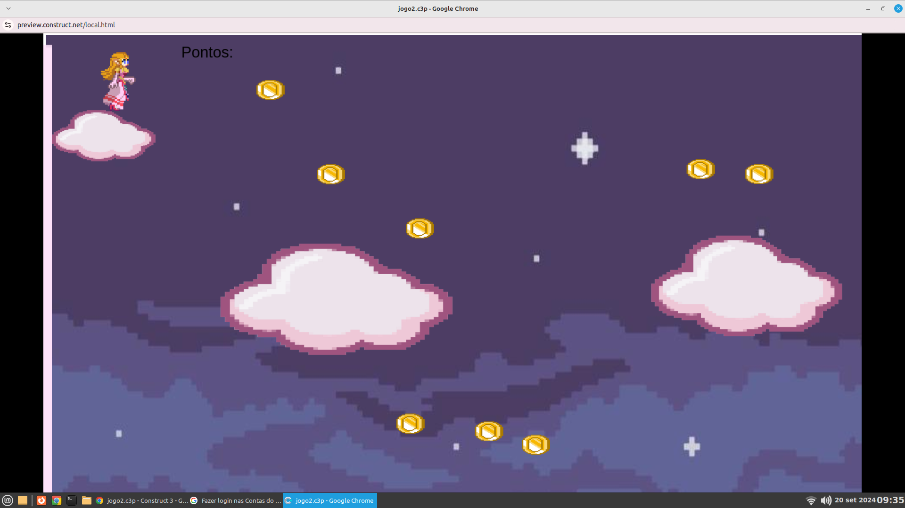

Pedagoga Thaiany possui formação academica em Letras, Direito, Sociologia, pedagogia e trabalha atualmente sendo Coordenadora dos Técnicos. A mesma já trabalhou no Fórum de Maringa e como Terceira Vara Criminal.


Clique na imagem acima para jogar um jogo produzido especialmente para a Thaiany
 Clique na imagem acima para dar sua opinião sobre nosso projeto!
Clique na imagem acima para dar sua opinião sobre nosso projeto!